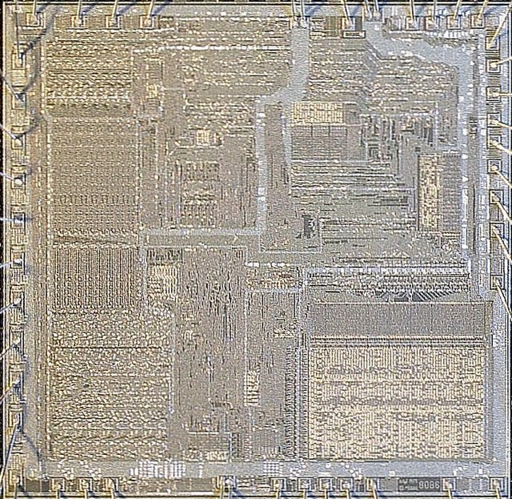

Open Optiplex Project
Welcome Page
Documentation
Here you can find: wiring diagrams, 3-D models that can be 3-D printed, explanations, and recommendations to get the best experience and longest use possible out of your computer.
Parts Store

You can purchase already printed 3-D items, replacement parts, adapter kits, case conversion kits
About Page

Here you can learn about the project developer, founder, and hobbyist, Kady